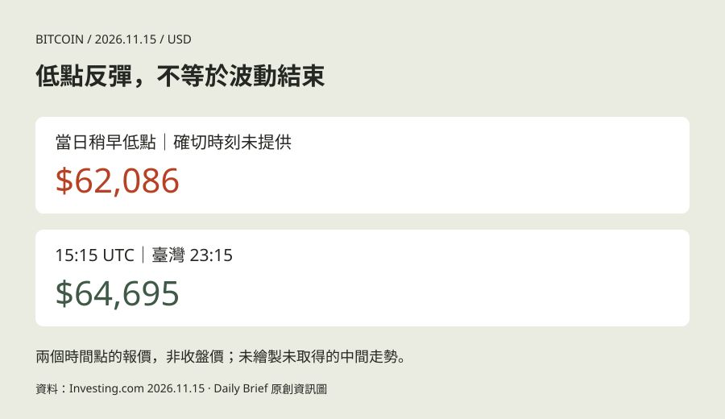

MARKETS / THE ESSENTIALS
比特幣週末一度跌至約 6.2 萬美元，反彈仍伴隨清算壓力
收錄於 2026-11-16 日報 · Investing.com 原始市場報導
時間與比較基準
- Investing.com 11 月 15 日更新記錄，比特幣當日稍早觸及 62,086 美元，為 7 月 13 日以來低位；美東 10:15／UTC 15:15（臺灣 23:15）約為 64,695 美元。加密市場全天交易，這不是美股收盤價。
- 報導引用 CoinGlass 稱，截至新加坡週日早上之前的 24 小時，加密資產約 20 億美元部位遭清算。此區間與上述報價時點不同，不能當作完全同步的數據。
原因仍需區分證據
- 市場人士提出資金輪動等解釋，屬分析而非單一原因定論；本期不以未獨立核對的 ETF 流量推導精確因果。
- 編輯解讀：清算可能放大波動，從低點反彈也不保證下跌結束。圖中只呈現兩個已報導時間點，不補造中間走勢或提供買賣指令。

原文與查核
以上為整理與解讀，重要細節請回到原文核對。
- Investing.com 原始市場報導 ↗發布 2026-11-15 · 查核 2026-11-16T04:59:46+08:00